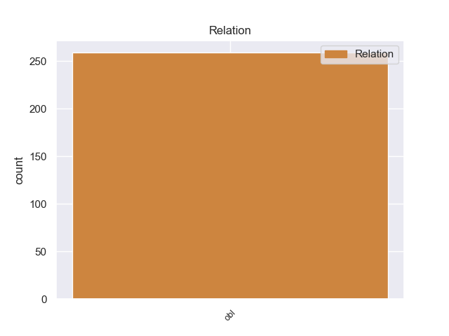
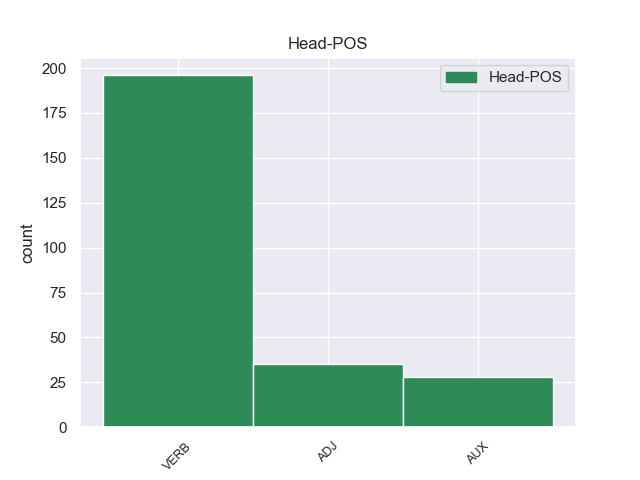
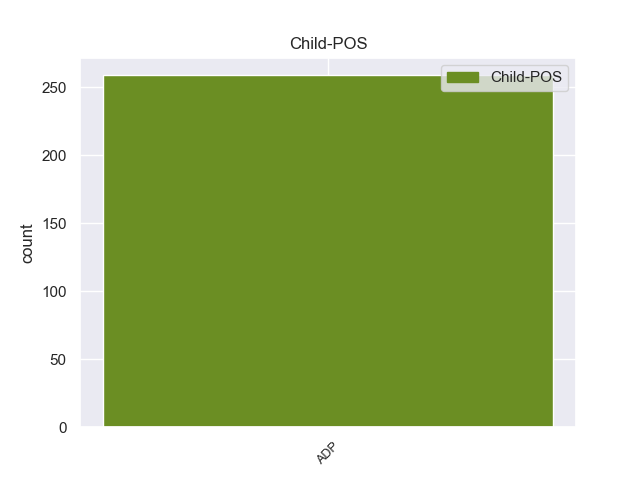

Distribution of features within this leaf



Agreement Rules sorted by frequency.
- When the dependent token is the oblique nominal(obl) of the head token, and the head token is VERB and the dependent token is ADP.
1 पत्रिका _ _ _ _ 0 _ _ _
2 के _ _ _ _ 0 _ _ _
3 अनुसार _ _ _ _ 0 _ _ _
4 अमेरिका _ _ _ _ 0 _ _ _
5 की का ADP -- AdpType=Post|Case=Acc|Gender=Fem|Number=Sing 15 obl _ _
6 ओर _ _ _ _ 0 _ _ _
7 से _ _ _ _ 0 _ _ _
8 परमाणु _ _ _ _ 0 _ _ _
9 बाजार _ _ _ _ 0 _ _ _
10 के _ _ _ _ 0 _ _ _
11 इस _ _ _ _ 0 _ _ _
12 घोटाले _ _ _ _ 0 _ _ _
13 को _ _ _ _ 0 _ _ _
14 उजागर _ _ _ _ 0 _ _ _
15 करने कर VERB -- Case=Acc|VerbForm=Inf 0 _ _ _
16 में _ _ _ _ 0 _ _ _
17 रूचि _ _ _ _ 0 _ _ _
18 रखने _ _ _ _ 0 _ _ _
19 के _ _ _ _ 0 _ _ _
20 बावजूद _ _ _ _ 0 _ _ _
21 अमेरिका _ _ _ _ 0 _ _ _
22 और _ _ _ _ 0 _ _ _
23 आईएईए _ _ _ _ 0 _ _ _
24 को _ _ _ _ 0 _ _ _
25 खान _ _ _ _ 0 _ _ _
26 से _ _ _ _ 0 _ _ _
27 सीधे _ _ _ _ 0 _ _ _
28 पूछताछ _ _ _ _ 0 _ _ _
29 करने _ _ _ _ 0 _ _ _
30 की _ _ _ _ 0 _ _ _
31 अनुमति _ _ _ _ 0 _ _ _
32 नहीं _ _ _ _ 0 _ _ _
33 दी _ _ _ _ 0 _ _ _
34 गई _ _ _ _ 0 _ _ _
35 । _ _ _ _ 0 _ _ _
1 राष्ट्रीय _ _ _ _ 0 _ _ _
2 अल्पसंख्यक _ _ _ _ 0 _ _ _
3 आयोग _ _ _ _ 0 _ _ _
4 की _ _ _ _ 0 _ _ _
5 ओर ओर ADP -- AdpType=Post|Case=Acc|Gender=Fem|Number=Sing|Person=3 7 obl _ _
6 से _ _ _ _ 0 _ _ _
7 गठित गठित ADJ -- Case=Acc 0 _ _ _
8 विशेषज्ञों _ _ _ _ 0 _ _ _
9 की _ _ _ _ 0 _ _ _
10 समिति _ _ _ _ 0 _ _ _
11 ने _ _ _ _ 0 _ _ _
12 पाया _ _ _ _ 0 _ _ _
13 है _ _ _ _ 0 _ _ _
14 कि _ _ _ _ 0 _ _ _
15 उत्तर _ _ _ _ 0 _ _ _
16 प्रदेश _ _ _ _ 0 _ _ _
17 , _ _ _ _ 0 _ _ _
18 महाराष्ट्र _ _ _ _ 0 _ _ _
19 और _ _ _ _ 0 _ _ _
20 कर्नाटक _ _ _ _ 0 _ _ _
21 में _ _ _ _ 0 _ _ _
22 बड़े _ _ _ _ 0 _ _ _
23 पैमाने _ _ _ _ 0 _ _ _
24 पर _ _ _ _ 0 _ _ _
25 दलितों _ _ _ _ 0 _ _ _
26 का _ _ _ _ 0 _ _ _
27 धर्मान्तरण _ _ _ _ 0 _ _ _
28 हो _ _ _ _ 0 _ _ _
29 रहा _ _ _ _ 0 _ _ _
30 है _ _ _ _ 0 _ _ _
31 । _ _ _ _ 0 _ _ _
1 दरअसल _ _ _ _ 0 _ _ _
2 डाक _ _ _ _ 0 _ _ _
3 विभाग _ _ _ _ 0 _ _ _
4 ने _ _ _ _ 0 _ _ _
5 महाराष्ट्र _ _ _ _ 0 _ _ _
6 के _ _ _ _ 0 _ _ _
7 तीन _ _ _ _ 0 _ _ _
8 बीमा _ _ _ _ 0 _ _ _
9 धारकों _ _ _ _ 0 _ _ _
10 को _ _ _ _ 0 _ _ _
11 यह _ _ _ _ 0 _ _ _
12 कहते _ _ _ _ 0 _ _ _
13 हुए _ _ _ _ 0 _ _ _
14 पूरी _ _ _ _ 0 _ _ _
15 रक़म _ _ _ _ 0 _ _ _
16 लौटाने _ _ _ _ 0 _ _ _
17 से _ _ _ _ 0 _ _ _
18 इनकार _ _ _ _ 0 _ _ _
19 कर _ _ _ _ 0 _ _ _
20 दिया _ _ _ _ 0 _ _ _
21 था _ _ _ _ 0 _ _ _
22 कि _ _ _ _ 0 _ _ _
23 उन _ _ _ _ 0 _ _ _
24 लोगों _ _ _ _ 0 _ _ _
25 ने _ _ _ _ 0 _ _ _
26 पूरी _ _ _ _ 0 _ _ _
27 अवधि _ _ _ _ 0 _ _ _
28 तक _ _ _ _ 0 _ _ _
29 बीमा _ _ _ _ 0 _ _ _
30 की _ _ _ _ 0 _ _ _
31 रक़म _ _ _ _ 0 _ _ _
32 जमा _ _ _ _ 0 _ _ _
33 नहीं _ _ _ _ 0 _ _ _
34 की _ _ _ _ 0 _ _ _
35 और _ _ _ _ 0 _ _ _
36 समय _ _ _ _ 0 _ _ _
37 से _ _ _ _ 0 _ _ _
38 पहले पहले ADP -- AdpType=Post|Case=Nom|Gender=Masc|Number=Sing|Person=3 44 obl _ _
39 ही _ _ _ _ 0 _ _ _
40 पॉलिसी _ _ _ _ 0 _ _ _
41 को _ _ _ _ 0 _ _ _
42 बंद _ _ _ _ 0 _ _ _
43 कर _ _ _ _ 0 _ _ _
44 दिया दे AUX -- Case=Nom|Gender=Masc|Number=Sing 0 _ _ _
45 । _ _ _ _ 0 _ _ _
Disagree Examples:
1 कहा _ _ _ _ 0 _ _ _
2 जाता _ _ _ _ 0 _ _ _
3 है _ _ _ _ 0 _ _ _
4 कि _ _ _ _ 0 _ _ _
5 रानी _ _ _ _ 0 _ _ _
6 के _ _ _ _ 0 _ _ _
7 प्रतिदिन _ _ _ _ 0 _ _ _
8 नर्मदा _ _ _ _ 0 _ _ _
9 दर्शन _ _ _ _ 0 _ _ _
10 के _ _ _ _ 0 _ _ _
11 पश्चात पश्चात ADP -- AdpType=Post|Case=Nom|Gender=Masc|Number=Sing|Person=3 16 obl _ _
12 अन्न _ _ _ _ 0 _ _ _
13 - _ _ _ _ 0 _ _ _
14 जल _ _ _ _ 0 _ _ _
15 ग्रहण _ _ _ _ 0 _ _ _
16 करने कर VERB -- Case=Acc|Number=Sing|VerbForm=Inf 0 _ _ _
17 की _ _ _ _ 0 _ _ _
18 आदत _ _ _ _ 0 _ _ _
19 के _ _ _ _ 0 _ _ _
20 कारण _ _ _ _ 0 _ _ _
21 बाज _ _ _ _ 0 _ _ _
22 बहादुर _ _ _ _ 0 _ _ _
23 ने _ _ _ _ 0 _ _ _
24 यह _ _ _ _ 0 _ _ _
25 ऊँचा _ _ _ _ 0 _ _ _
26 महल _ _ _ _ 0 _ _ _
27 बनवाया _ _ _ _ 0 _ _ _
28 था _ _ _ _ 0 _ _ _
29 । _ _ _ _ 0 _ _ _
1 मंदिर _ _ _ _ 0 _ _ _
2 के _ _ _ _ 0 _ _ _
3 समीप समीप ADP -- AdpType=Post|Case=Nom|Gender=Masc|Number=Sing|Person=3 4 obl _ _
4 स्थित स्थित ADJ -- Case=Acc 0 _ _ _
5 इस _ _ _ _ 0 _ _ _
6 महल _ _ _ _ 0 _ _ _
7 का _ _ _ _ 0 _ _ _
8 निर्माण _ _ _ _ 0 _ _ _
9 शाह _ _ _ _ 0 _ _ _
10 बदगा _ _ _ _ 0 _ _ _
11 खान _ _ _ _ 0 _ _ _
12 ने _ _ _ _ 0 _ _ _
13 अकबर _ _ _ _ 0 _ _ _
14 की _ _ _ _ 0 _ _ _
15 हिंदू _ _ _ _ 0 _ _ _
16 पत्नी _ _ _ _ 0 _ _ _
17 के _ _ _ _ 0 _ _ _
18 लिए _ _ _ _ 0 _ _ _
19 करवाया _ _ _ _ 0 _ _ _
20 था _ _ _ _ 0 _ _ _
21 । _ _ _ _ 0 _ _ _
1 यदि _ _ _ _ 0 _ _ _
2 आपके _ _ _ _ 0 _ _ _
3 पास _ _ _ _ 0 _ _ _
4 थोड़ा _ _ _ _ 0 _ _ _
5 सा _ _ _ _ 0 _ _ _
6 वक्त _ _ _ _ 0 _ _ _
7 और _ _ _ _ 0 _ _ _
8 हौसला _ _ _ _ 0 _ _ _
9 हो _ _ _ _ 0 _ _ _
10 तो _ _ _ _ 0 _ _ _
11 सूर्योदय _ _ _ _ 0 _ _ _
12 के _ _ _ _ 0 _ _ _
13 समय समय ADP -- Case=Acc|Gender=Masc 21 obl _ _
14 यहाँ _ _ _ _ 0 _ _ _
15 की _ _ _ _ 0 _ _ _
16 पहाड़ियों _ _ _ _ 0 _ _ _
17 पर _ _ _ _ 0 _ _ _
18 चहल _ _ _ _ 0 _ _ _
19 - _ _ _ _ 0 _ _ _
20 कदमी _ _ _ _ 0 _ _ _
21 करना कर VERB -- Case=Nom|VerbForm=Inf 0 _ _ _
22 बेहद _ _ _ _ 0 _ _ _
23 सुखद _ _ _ _ 0 _ _ _
24 लगता _ _ _ _ 0 _ _ _
25 है _ _ _ _ 0 _ _ _
26 । _ _ _ _ 0 _ _ _
1 लेकिन _ _ _ _ 0 _ _ _
2 टॉवर _ _ _ _ 0 _ _ _
3 के _ _ _ _ 0 _ _ _
4 ऊपर ऊपर ADP -- AdpType=Post|Case=Nom|Gender=Masc|Number=Sing|Person=3 5 obl _ _
5 जाने जा VERB -- Case=Acc|Number=Sing|Person=3|VerbForm=Inf 0 _ _ _
6 के _ _ _ _ 0 _ _ _
7 बाद _ _ _ _ 0 _ _ _
8 आपको _ _ _ _ 0 _ _ _
9 यह _ _ _ _ 0 _ _ _
10 जद्दोजहद _ _ _ _ 0 _ _ _
11 बेमानी _ _ _ _ 0 _ _ _
12 लगेगी _ _ _ _ 0 _ _ _
13 । _ _ _ _ 0 _ _ _
1 सूर्यास्त _ _ _ _ 0 _ _ _
2 के के ADP -- AdpType=Post|Case=Acc|Gender=Masc 10 obl _ _
3 समय _ _ _ _ 0 _ _ _
4 यहाँ _ _ _ _ 0 _ _ _
5 से _ _ _ _ 0 _ _ _
6 जैसलमेर _ _ _ _ 0 _ _ _
7 का _ _ _ _ 0 _ _ _
8 सुनहरा _ _ _ _ 0 _ _ _
9 रूप _ _ _ _ 0 _ _ _
10 देखना देख VERB -- Case=Nom|VerbForm=Inf 0 _ _ _
11 अपने _ _ _ _ 0 _ _ _
12 आप _ _ _ _ 0 _ _ _
13 में _ _ _ _ 0 _ _ _
14 बेहद _ _ _ _ 0 _ _ _
15 अनोखा _ _ _ _ 0 _ _ _
16 अनुभव _ _ _ _ 0 _ _ _
17 है _ _ _ _ 0 _ _ _
18 । _ _ _ _ 0 _ _ _